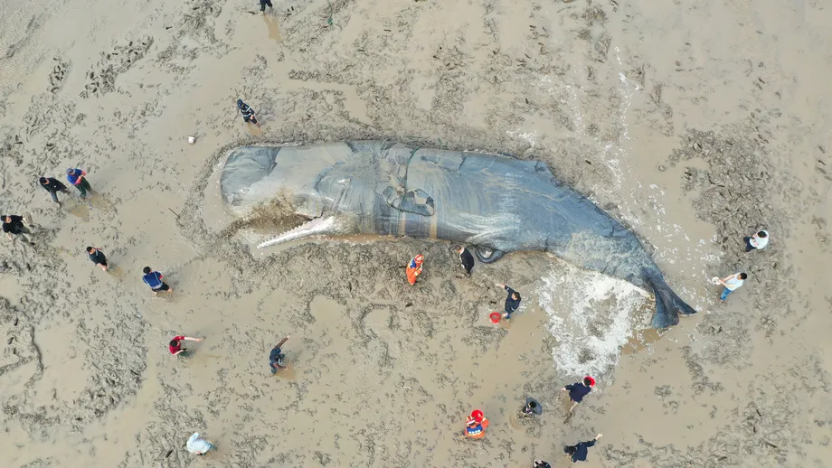
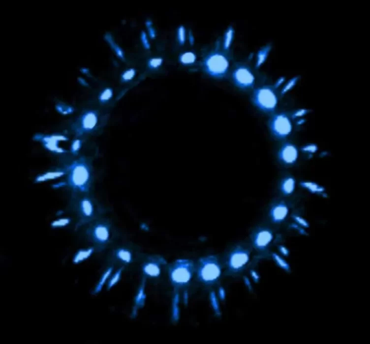

Há diversos mistérios nos nossos oceanos, dentre eles:

O motivos das baleias encalharem nas praias?
O estudo compotamental dos seres marinhos é uma grande mistério entre os cientistas até os dias atuais, até porque é muito dificil determinar esse tal comportamento.

Por que as criaturas maritimas brilham?
a luz no fundo do oceano não vem apenas do sol, mas tambem de algumas demonstrações de bioluminêscencia que segundo mergulhadores parece até alienigena.